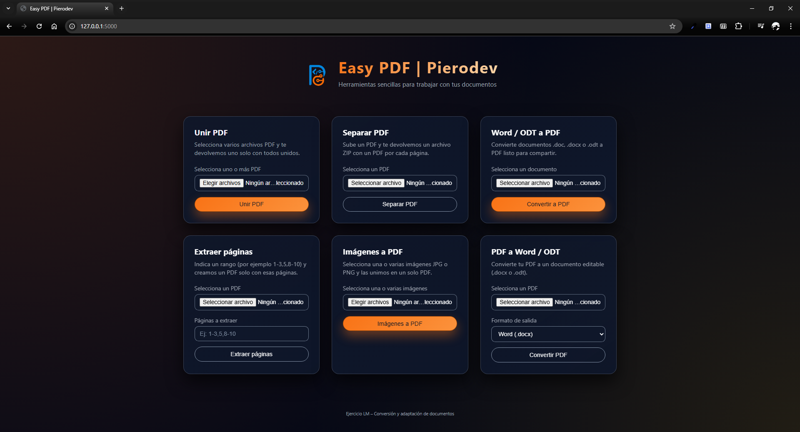

Easy PDF
2025-12-03

App local para unir, separar y convertir PDFs (Word/ODT, imágenes, rangos de páginas).
PIERODEV — Windows 95 Command Prompt
Hola, soy PieroDev, desarrollador web en formación. Creo proyectos web y herramientas en Python, y estoy aprendiendo cada día.
Correo: piero7ov@gmail.com
Perfil: |
Me gusta construir herramientas que convierten datos en soluciones. He desarrollado proyectos donde JSON es clave (validación de usuarios, configuración y exportes de resúmenes), además de utilidades en Python para automatizar tareas y apps con Flask que resuelven necesidades reales.
2025-12-03
App local para unir, separar y convertir PDFs (Word/ODT, imágenes, rangos de páginas).
2025-11-14
Monitorización de recursos (CPU, RAM, disco y red), con CSV, gráficas y dashboard web.
2025-11-11
Login en HTML/CSS/JS validando usuarios desde JSON con mensajes visuales.